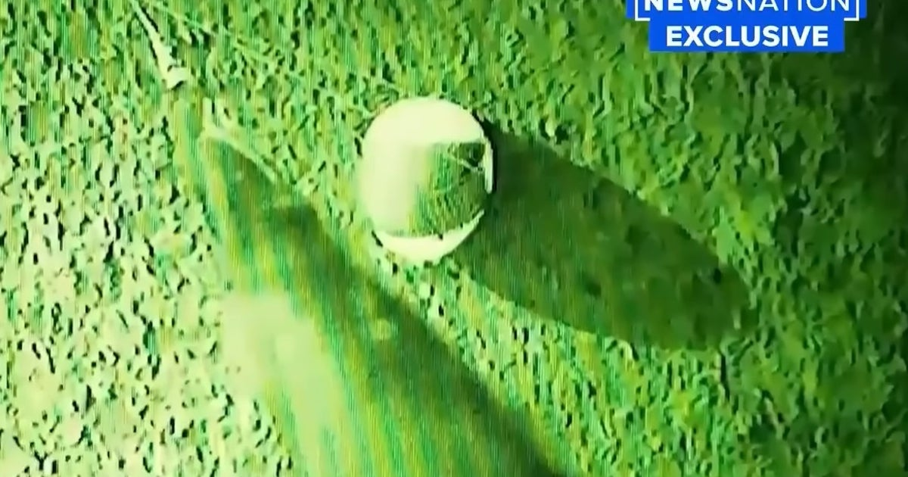
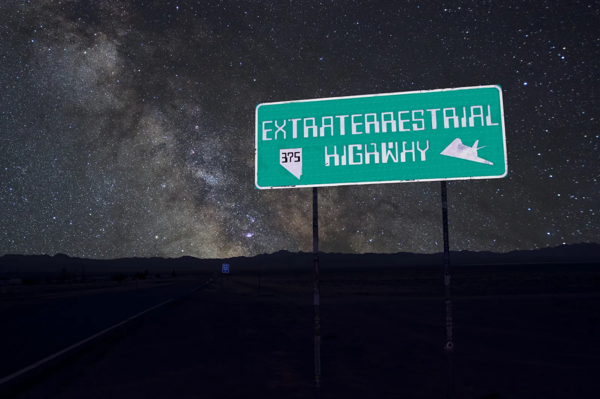

Der Hook: ein weißes Ei, ein Haken, ein Bergungsteam
Jake Barber trat nicht mit einer klassischen Sichtungsgeschichte an die Öffentlichkeit. Sein Kern ist härter: Er beschreibt sich als jemand, der in einem Umfeld gearbeitet haben will, in dem anomale Objekte geborgen wurden. Das zentrale Bild seiner Erzählung ist ein weißes, eiförmiges Objekt — ungefähr SUV-Größe, ohne sichtbaren Antrieb, ohne erkennbare Steuerflächen, ohne thermische Signatur.
Genau dadurch fühlt sich der Fall anders an als viele ältere UAP-Geschichten. Hier geht es nicht um ein Licht am Himmel. Es geht um ein Objekt am Boden, eine angebliche Retrieval-Operation und die Frage, ob Teile der US-Strukturen seit Jahren mit Material arbeiten, das offiziell nicht existiert.


Was Barber behauptet
Barber sagte gegenüber Ross Coulthart und NewsNation, er habe in offiziellen und inoffiziellen Rollen für die US-Regierung gearbeitet. In diesem Kontext sei er Teil von Operationen gewesen, bei denen ungewöhnliche Objekte geborgen wurden. Besonders hängen blieb seine Beschreibung des weißen “Egg” — ein Objekt, das laut Barber nicht wie menschliche Technologie wirkte.
Die stärkste Formulierung aus seiner öffentlichen Darstellung ist sinngemäß: Beim bloßen Anblick habe man gemerkt, dass das Objekt außergewöhnlich und anomal war. Für die UAP-Community war das ein Volltreffer, weil Barber nicht nur über Gerüchte sprach, sondern ein konkretes Retrieval-Szenario schilderte.
Das Ei als perfektes Disclosure-Symbol
Ein weißes eiförmiges Objekt wirkt fast zu simpel — und genau deshalb bleibt es hängen. Kein Sci-Fi-Design, keine Flügel, keine Triebwerke, keine martialische Form. Nur eine glatte, stille, fremde Geometrie. In der UFO-Mythologie ist das stark, weil es nicht nach Hollywood aussieht, sondern nach etwas, das sich jeder sofort merken kann.
Die kritische Seite des Falls liegt ebenfalls genau hier: Das veröffentlichte Videomaterial überzeugte nicht jeden. Viele Zuschauer erwarteten den ultimativen Beweis und bekamen eher einen kurzen, schwer einzuordnenden Clip. Das schwächt die Beweiskraft — aber nicht zwingend die Bedeutung des Falls als moderner Disclosure-Knoten.

Der Flying-Disc-Moment: als hätte etwas zurückgeschaut
Der Vetted-Deep-Dive macht die Akte noch seltsamer: Barber beschreibt nicht nur ein eiförmiges Objekt, sondern auch eine Begegnung mit einem achtseitigen fliegenden Disc-Objekt, die ihn emotional regelrecht überrollt haben soll. Beim Annähern habe er eine Mischung aus Traurigkeit, Schönheit, Liebe und Ehrfurcht gespürt — so stark, dass er die Erfahrung nicht mehr nur technisch, sondern fast spirituell deutet.
Besonders heftig ist seine Formulierung, er habe sich während des Fluges nach der Bergung zeitweise wie von einer “beautiful spirit”-Präsenz begleitet oder sogar “possessed” gefühlt. Das ist natürlich der Teil, bei dem die Beweislast maximal schwierig wird. Aber als Rabbit-Hole-Schicht ist es Gold: Barber bewegt die Akte weg vom reinen Metall-und-Motoren-Modell hin zu der Frage, ob manche UAP-Erfahrungen bewusstseinsnah, psychologisch oder sogar interaktiv wirken.
Der Psionics-Teil: heikel, aber wichtig
Die Barber-Akte wird noch ungewöhnlicher durch Aussagen aus dem Umfeld sogenannter psionischer oder bewusstseinsnaher Komponenten. Laut Barber gebe es spezialisierte Teams oder Operatoren, die über mentale beziehungsweise intuitive Verbindung mit UAPs arbeiten sollen. Er beschreibt das eher wie eine meditative Kopplung als wie klassische Fernsteuerung.
Für eine saubere Akte muss man hier klar trennen: Der Retrieval-Kern ist das eine, die erweiterten Bewusstseins-/Kontakt-Deutungen sind eine zweite Schicht. Gerade diese zweite Schicht macht Barber aber so zeittypisch. Moderne UAP-Erzählungen handeln längst nicht mehr nur von Metall, Radar und Piloten. Sie bewegen sich zunehmend zwischen Geheimprogrammen, biologischen Effekten, Remote-Viewing-Mythologie, Bewusstsein und der Frage, ob “NHI” nicht nur technologisch, sondern auch mental oder interaktiv gedacht werden muss.
Warum Ross Coulthart und NewsNation wichtig sind
Barber wäre ohne die mediale Bühne vermutlich ein Nischenfall geblieben. Durch Ross Coulthart und NewsNation bekam die Geschichte aber sofort die richtige moderne Disclosure-Verpackung: Interview, Teaser, Exklusivmaterial, Pentagon-Reaktion, Community-Analyse, Gegenreaktion.
Das ist für Dr. Sourkraut Filez wichtig, weil der Fall exemplarisch zeigt, wie UAP-Geschichten heute funktionieren. Nicht mehr nur als Akten aus Archiven, sondern als laufende Medienereignisse: Aussage, Clip, Debunk, Gegen-Debunk, neue Andeutung, weitere Zeugen, politischer Druck.
Die Pentagon-Frage
Besonders interessant ist, dass Barbers Aussagen nicht einfach nur im Podcast-Raum hängenblieben. Medien berichteten, dass seine Behauptungen untersucht beziehungsweise an zuständige Stellen herangetragen wurden. Das bedeutet nicht automatisch Bestätigung — aber es bedeutet, dass der Fall groß genug wurde, um institutionelle Reaktion zu erzeugen.
Für Believer ist das der wichtige Punkt: Wenn alles kompletter Unsinn wäre, warum erzeugt gerade dieser Fall so viel Bewegung? Für Skeptiker bleibt dagegen der berechtigte Einwand: Ohne harte, überprüfbare Daten bleibt auch eine spektakuläre Zeugenaussage zunächst eine Zeugenaussage.
Warum Barber hängen bleibt
Jake Barber ist keine Akte, die durch historische Distanz wirkt. Sie wirkt durch Nähe. Man hat das Gefühl, hier schaut man einer Geschichte beim Entstehen zu. Das weiße Ei, die Recovery-Behauptung, die NewsNation-Bühne, die Reaktionen der Community und die Verbindung zu anderen modernen Whistleblower-Narrativen machen Barber zu einem der stärksten aktuellen Disclosure-Fälle.
Ob Barber am Ende als Durchbruch, Irrweg oder Zwischenkapitel gesehen wird, ist offen. Aber als Akte ist er Pflichtstoff — weil er genau die Frage stellt, die über allem hängt: Wenn es geborgene UAP-Technologie gibt, wer kontrolliert sie?